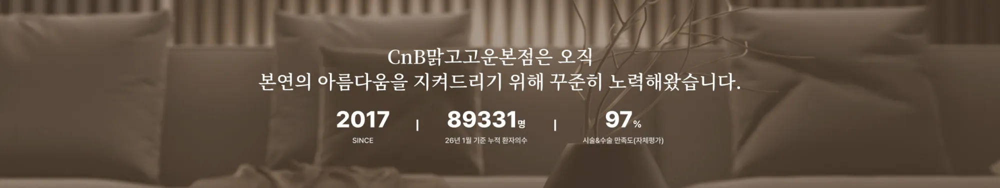
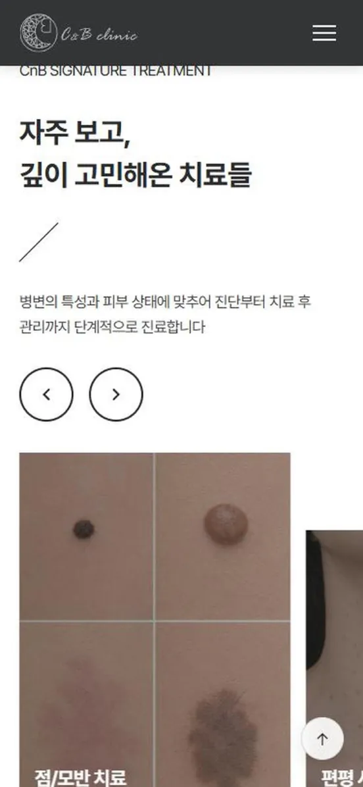
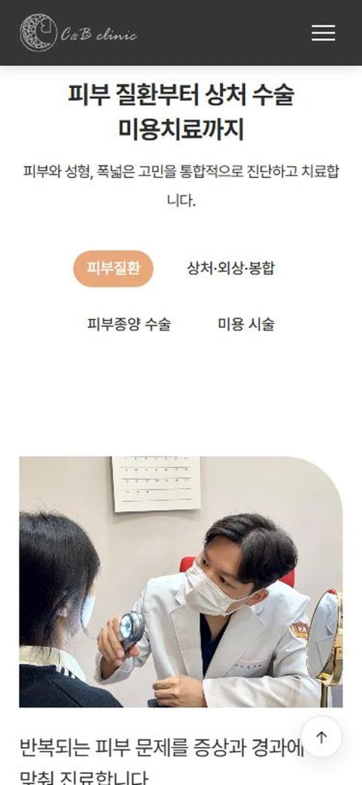

RESULT
큰 수정 없이
메인페이지를 교체했습니다.
PC · 모바일 반응형으로 구현해 실제 홈페이지에 적용되었습니다.
2026.10
진료 과목이 정리되지 않았던 피부과 CnB맑고고운본점의, 처음 방문한 환자도 찾기 쉬운 메인페이지 리디자인

CnB맑고고운본점은 피부 · 성형부터 피부질환까지 진료 과목이 많은 피부과입니다. 기존 메인페이지는 진료 과목이 정리되어 있지 않았고, 병원이 원하는 깔끔한 인상도 부족했습니다.
다양한 환자와 처음 방문하는 사람이 보는 페이지라, 원하는 진료를 쉽게 찾고 첫 화면에서 병원을 신뢰할 수 있게 만드는 것이 목표였습니다. 마케팅팀의 기획안을 바탕으로 디자인하고, HTML · CSS로 직접 구현했습니다.
기존 사이트는 연한 브라운 계열이었습니다. 따뜻한 분위기를 주기 위해 포인트를 웜 오렌지로 바꾸고, 배경은 크림 · 베이지 톤으로 맞춰 화면 전체의 색 흐름을 통일했습니다.
기존 사이트에서 신뢰감을 주던 대표원장 사진은 메인 비주얼에 그대로 두고, 하단에는 개원 연도 · 누적 환자 수 · 만족도를 보여 주는 수치 배너를 더했습니다.
흩어져 있던 진료 과목을 분야별 네 개의 탭으로 묶어, 한 화면에서 분야를 바꿔 가며 원하는 진료를 찾을 수 있게 했습니다.
기존 플로팅 퀵메뉴의 위치를 이어 쓰고, 자주 쓰는 상담 · 예약 채널 위주로 구성해 어느 위치에서든 바로 연결되게 했습니다.
웜 오렌지 하나를 포인트로, 크림 · 베이지 바탕과 Pretendard 굵기 차이로 정보의 위계를 나눴습니다.
자주 보고, 깊이 고민해온 치료들
Pretendard Bold 48 — 섹션 제목아이라인 문신 제거
Pretendard Bold 28 — 카드 제목통증은 최소로, 안전은 확실하게
Pretendard Regular 18 — 본문다섯 가지 중점 진료를 일러스트 아이콘 카드로 정리

대표 치료를 이미지 카드 슬라이드로 구성

네 개 분야를 탭으로 전환하며 세부 진료 항목 확인

개원 연도 · 누적 환자 수 · 만족도로 신뢰 근거 제시

PC 화면의 정보 구조를 유지하면서 모바일에서는 카드와 탭을 한 열로 정리했습니다.




세부 디테일을 한 번 더 다듬고, 섹션마다 조금씩 달랐던 표현을 하나의 규칙으로 맞춰 페이지 전체의 통일감을 높이고 싶었습니다.
RESULT
PC · 모바일 반응형으로 구현해 실제 홈페이지에 적용되었습니다.